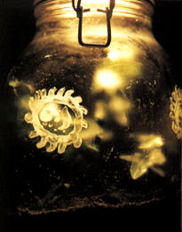
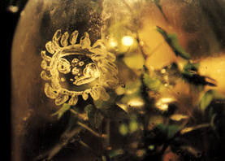

|  |
To get Big Mike to come apart properly I set up a little ecosystem inside a jar. The jar contains all computational material needed to recycle the Yoghurt paint that the Big Mike images on the inside of the glass are painted in. There's some soil, a plant and (hopefully) enough water and air to make the ecosystem run stable in the sunlight on my windowpane. During the initial period the lid will be slighly ajar, in order to give the ecosystem a chance to become stable before I close the lid the final time.
The surface of the inside of the jar in these kind of sealed ecosystems tend to slowly fill up with green funghi, or algae. Should disaster strike and the ecosystem die, then so more Viridian a death for Big Mike, even without oxygen, anaerobic processes will continue to let him disappear.
I am thinking of hooking up a webcam to monitor the jar (that is, when, and, or, if I get a cable-tv modem). The camera will provide a on-the-fly reference for how Dead Mike is dying. So that you can see exactly how much furry green fungus that is sprouting from the yoghurt paint. The camera will also store one image a day in a special folder to make a fast forward movie of the Death of Big Mike.
|  |
designed by joel westerberg